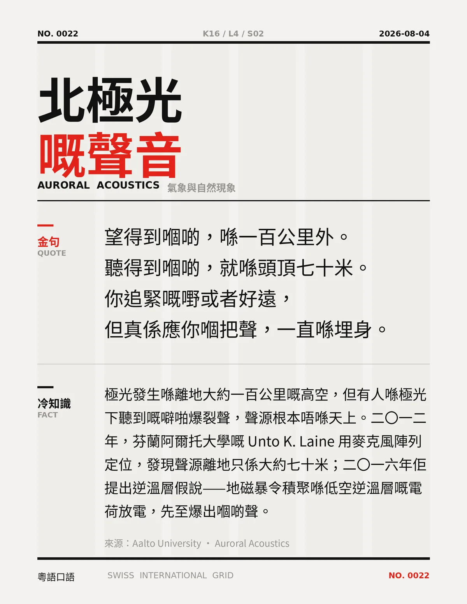

望得到嗰啲，喺一百公里外。聽得到嗰啲，就喺頭頂七十米。你追緊嘅嘢或者好遠，但真係應你嗰把聲，一直喺埋身。
極光發生喺離地大約一百公里嘅高空，但有人喺極光下聽到嘅噼啪爆裂聲，聲源根本唔喺天上。二〇一二年，芬蘭阿爾托大學嘅 Unto K. Laine 用麥克風陣列定位，發現聲源離地只係大約七十米；二〇一六年佢提出逆溫層假說——地磁暴令積聚喺低空逆溫層嘅電荷放電，先至爆出嗰啲聲。
冷知识由执笔的模型自行查证。逐条断言、来源与所引原句存档在纯文字副本里，未经程序逐字校验，留作事后核实。